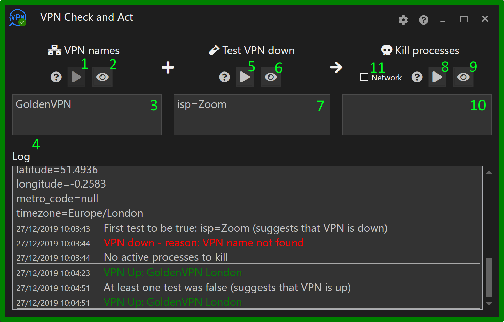
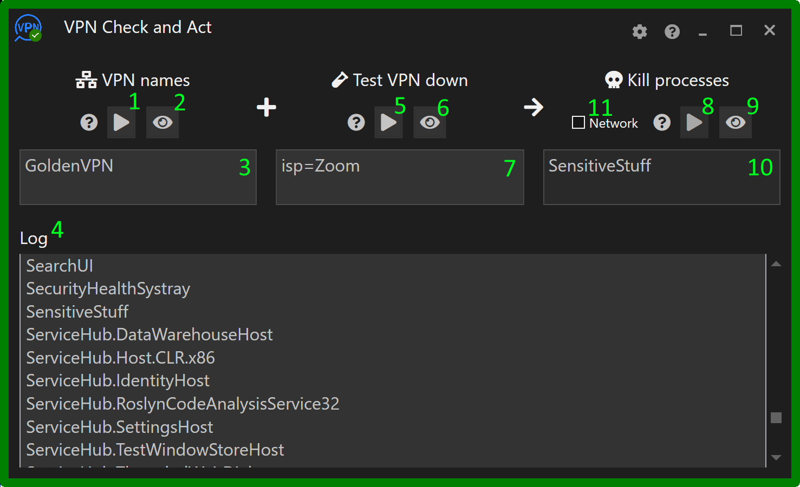

Configuring VPN Check and Act
There are three steps to configuring VPN Check and Act.
- Entering the names of the VPNs to be monitored.
- Entering tests to determine if the network traffic is using a VPN. This step is optional, but if it is not configured, whilst VPN Check and Act will still be able to detect if a VPN is up, it will not be able to determine whether the VPN is operating correctly.
- The actions to take if the VPN fails. This will be either killing specific applications or the entire network.
Please note that all entries described in the following three steps are case-sensitive.
1. Entering the VPN names
- Start the VPN and then click the eye button (#2).
- The log (#4) will display the current network connections. Identify the operational VPN and choose text that differentiates the VPN from the other network connections. In the above example, 'PureVPN' is used. 'PureVPN Belgium' would also work but you may have other configurations of PureVPN, such as one that uses servers in London, which might be identified as 'PureVPN London' which, obviously, would not match the 'PureVPN Belgium' text.
- Copy (or type) the chosen text into the box (#3).
- Click the play button #1. If the name has been entered correctly and the VPN is still working, VPN Check and Act's border will turn green (below screenshot) and the log explains why the VPN is believed to be operational.

2. Entering the tests

- Disconnect the VPN (the border becomes red) and click the eye button (#6).
- The log will display the current http headers coming from your computer as viewed by an external observer. When a VPN is not operational, the headers will present the computer's true geographic values but when a VPN is operational these values will describe the active VPN server's information.
- Enter one or more tests that are true when the PVN is not operational. Some obvious tests such as using the value of the city don't always work well. You may find that, the city changes even when connecting from the same location. Testing the country would be safer, but then it negates using a VPN that is based in your home country - which may not be a problem. A test that does seem to work well is the name of the ISP, as in the above example. Copy the desired test(s) into the box (#7).
- Click the play button (#5) and the log should state that the VPN is down because one of the tests is true. (See the first part of the log in the screenshot below.)
- Start the VPN and click the play button again. The result should be as shown below with the log stating all tests were not true and hence the PVN is up.

3. Entering the actions for when the VPN goes down

- If the required action for when the VPN goes down is to just kill the entire network, check the network box (#11).
- If the requirement is to only terminate certain applications, then the corresponding process names need to be entered into the box (#10). The process name is usually similar, but often not identical, to the application name. To obtain the process name, start the application (after starting the VPN if it is very sensitive) and click the eye button (#9).
- The log will show the running processes. (There will be quite a few.) Find the process that corresponds to the application that should be terminated when the VPN fails.
- Enter the process name in the box (#10).
- Click the play button (#8) and if the application is still running, the below warning will be shown. If you are happy with the warning, click the Yes button and confirm the application has been terminated. If it hasn't been terminated, probably the wrong process name was selected. (Try to find the correct process name and try again.) Obviously, in normal operation, the warning will not be shown but rather the application will be quietly terminated.

4. That's it
- VPN Check and Act should now be operational. To test, bring up and down the VPNs, and make sure the required applications are being terminated.
- Each of the boxes #3, #7 and #10 can have multiple entries but only one entry per line. Whenever, you make a change to a box contents, click the corresponding play button (it should be pulsing) to activate the change.
- All entries are case-sensitive.
- Some further settings/actions are available via the cog button (#12). The most important one being the purchase button!